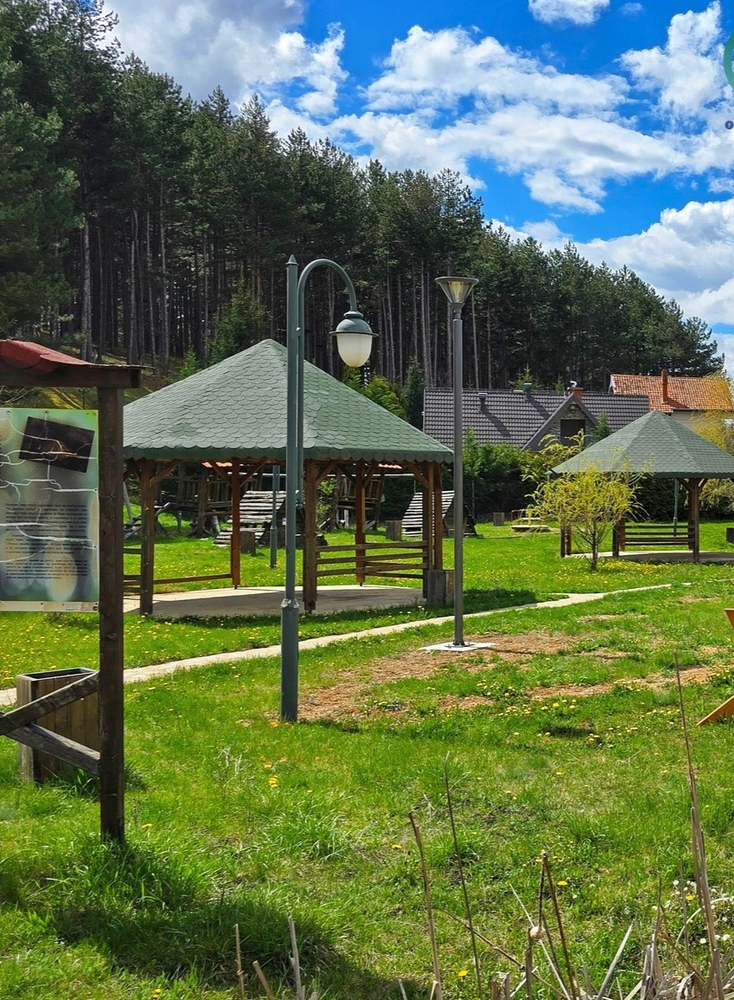
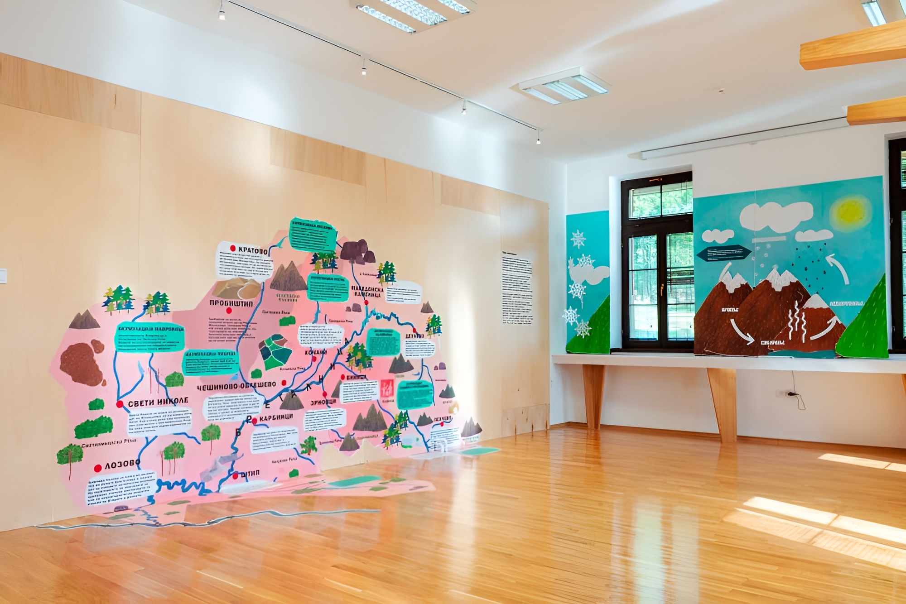
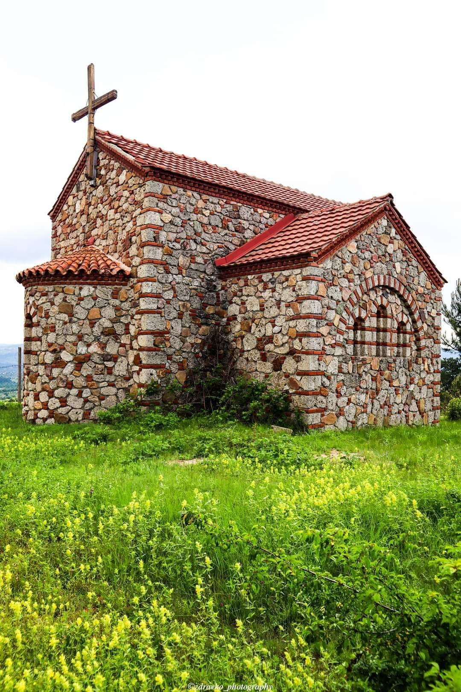
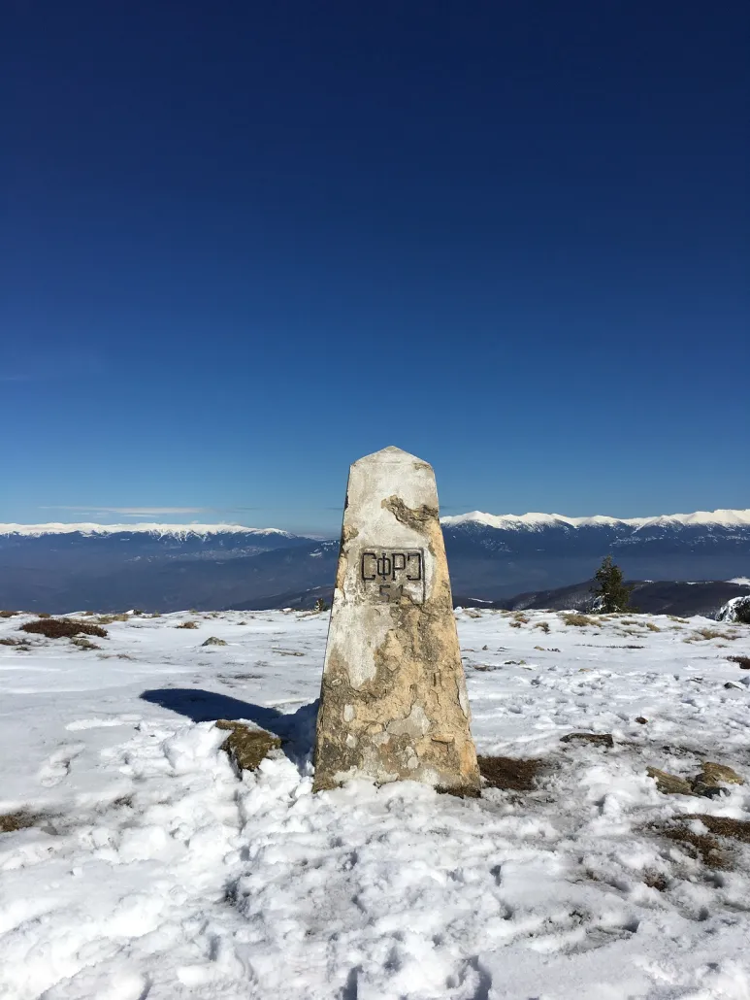

Пехчевски Водопади
Искусете ја моќта на седумте малешевски водопади.

Откријте ги природните реткости и авантуристичките патеки на Пехчево.
Искусете ја моќта на седумте малешевски водопади.

Рекреативен центар за целото семејство.

Мистична карпа со неверојатна форма.

Срцето на туризмот во Пехчево.

Центар за едукација и заштита на природата.

Духовно светилиште над градот.

Едукативна патека за најмладите.

Живеалиште на инсектојадната Росичка.

Највисокиот врв на Влаина планина.

Истражете го древниот вулкански конус.
 (1).jpg)
Природни камени скулптури.

Спектакуларни земјени пирамиди.
Инфо: 033 441 321